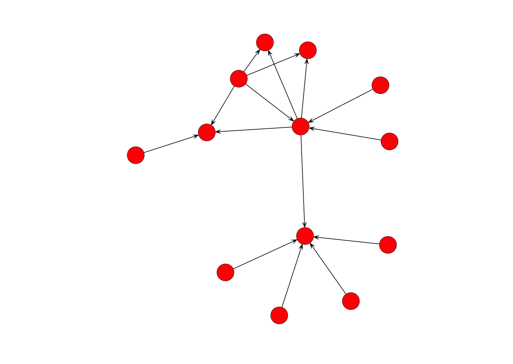
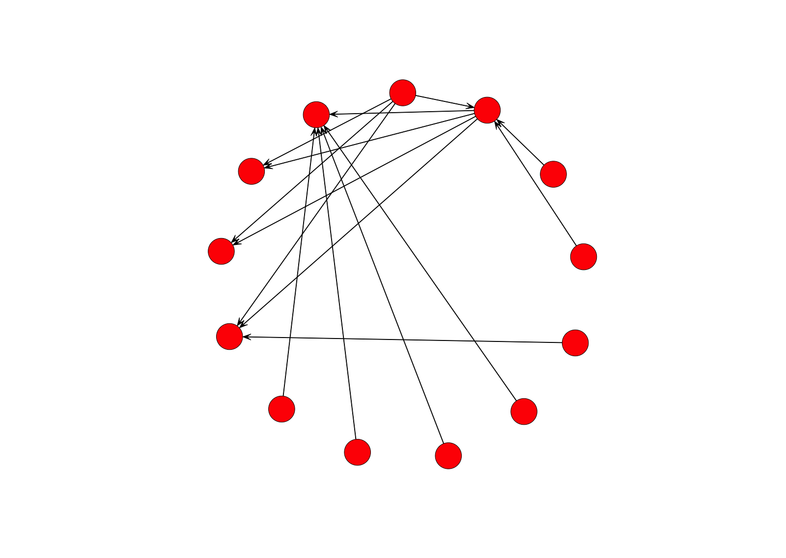
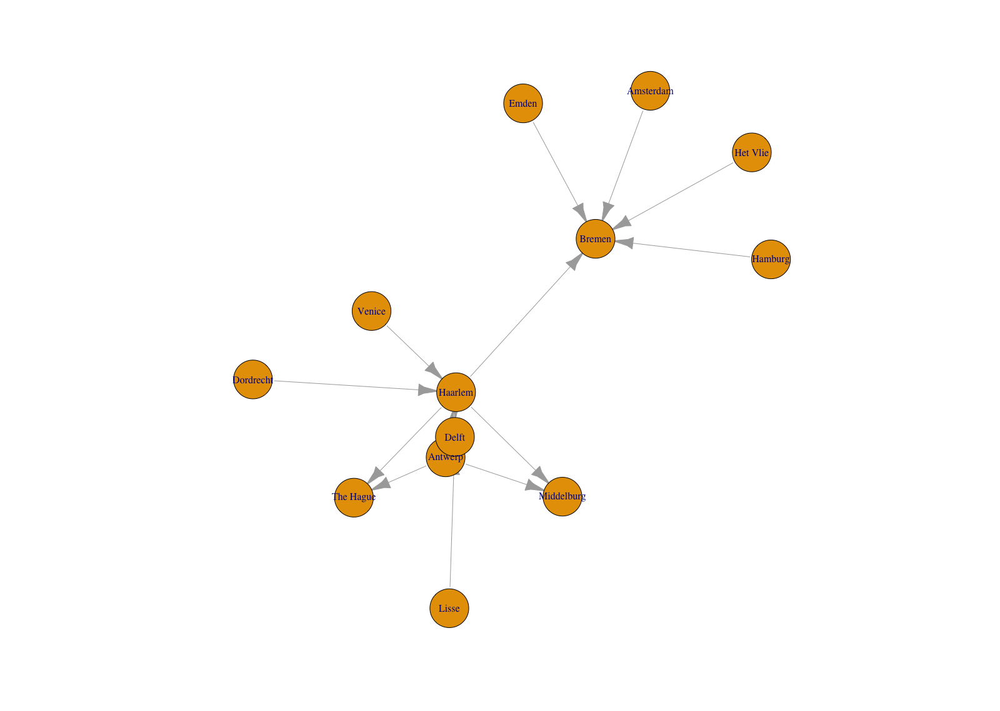
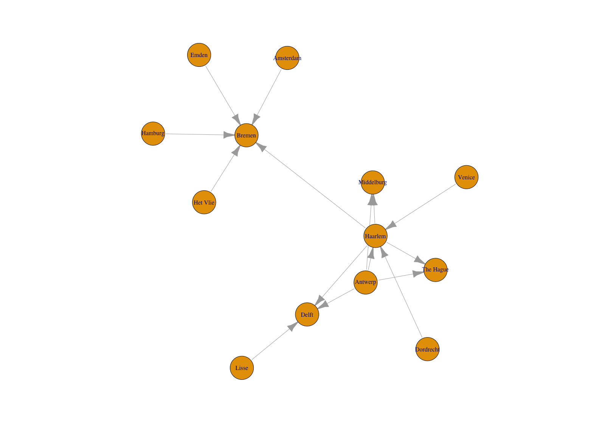
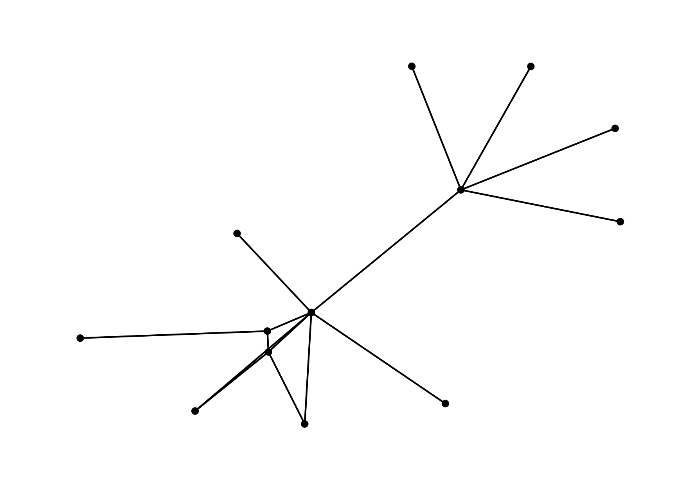
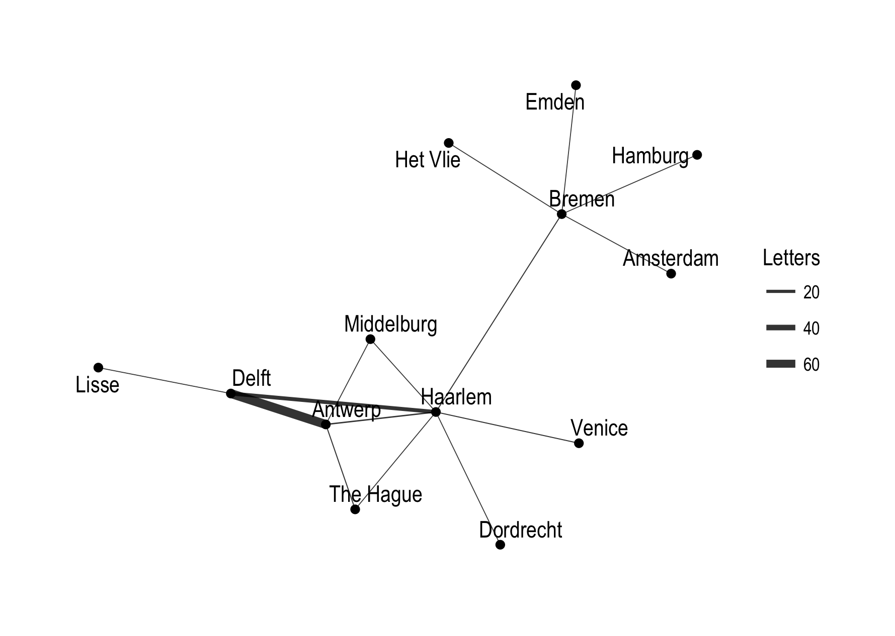
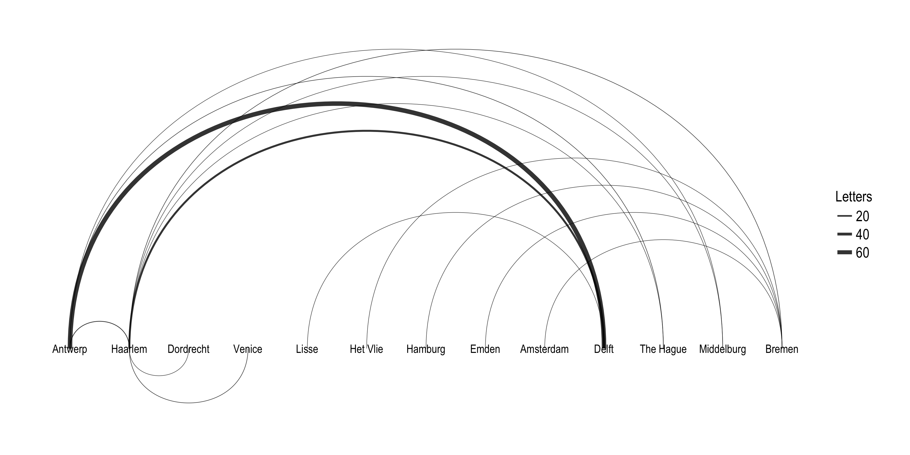

Over a wide range of fields network analysis has become an increasingly popular tool for scholars to deal with the complexity of the interrelationships between actors of all sorts. The promise of network analysis is the placement of significance on the relationships between actors, rather than seeing actors as isolated entities. The emphasis on complexity, along with the creation of a variety of algorithms to measure various aspects of networks, makes network analysis a central tool for digital humanities.1 This post will provide an introduction to working with networks in R, using the example of the network of cities in the correspondence of Daniel van der Meulen in 1585.
There are a number of applications designed for network analysis and the creation of network graphs such as gephi and cytoscape. Though not specifically designed for it, R has developed into a powerful tool for network analysis. The strength of R in comparison to stand-alone network analysis software is three fold. In the first place, R enables reproducible research that is not possible with GUI applications. Secondly, the data analysis power of R provides robust tools for manipulating data to prepare it for network analysis. Finally, there is an ever growing range of packages designed to make R a complete network analysis tool. Significant network analysis packages for R include the statnet suite of packages and igraph. In addition, Thomas Lin Pedersen has recently released the tidygraph and ggraph packages that leverage the power of igraph in a manner consistent with the tidyverse workflow. R can also be used to make interactive network graphs with the htmlwidgets framework that translates R code to JavaScript.
This post begins with a short introduction to the basic vocabulary of network analysis, followed by a discussion of the process for getting data into the proper structure for network analysis. The network analysis packages have all implemented their own object classes. In this post, I will show how to create the specific object classes for the statnet suite of packages with the network package, as well as for igraph and tidygraph, which is based on the igraph implementation. Finally, I will turn to the creation of interactive graphs with the vizNetwork and networkD3 packages.
Network Analysis: Nodes and Edges
The two primary aspects of networks are a multitude of separate entities and the connections between them. The vocabulary can be a bit technical and even inconsistent between different disciplines, packages, and software. The entities are referred to as nodes or vertices of a graph, while the connections are edges or links. In this post I will mainly use the nomenclature of nodes and edges except when discussing packages that use different vocabulary.
The network analysis packages need data to be in a particular form to create the special type of object used by each package. The object classes for network, igraph, and tidygraph are all based on adjacency matrices, also known as sociomatrices.2 An adjacency matrix is a square matrix in which the column and row names are the nodes of the network. Within the matrix a 1 indicates that there is a connection between the nodes, and a 0 indicates no connection. Adjacency matrices implement a very different data structure than data frames and do not fit within the tidyverse workflow that I have used in my previous posts. Helpfully, the specialized network objects can also be created from an edge-list data frame, which do fit in the tidyverse workflow. In this post I will stick to the data analysis techniques of the tidyverse to create edge lists, which will then be converted to the specific object classes for network, igraph, and tidygraph.
An edge list is a data frame that contains a minimum of two columns, one column of nodes that are the source of a connection and another column of nodes that are the target of the connection. The nodes in the data are identified by unique IDs. If the distinction between source and target is meaningful, the network is directed. If the distinction is not meaningful, the network is undirected. With the example of letters sent between cities, the distinction between source and target is clearly meaningful, and so the network is directed. For the examples below, I will name the source column as “for” and the target column as “to”. I will use integers beginning with one as node IDs.3 An edge list can also contain additional columns that describe attributes of the edges such as a magnitude aspect for an edge. If the edges have a magnitude attribute the graph is considered weighted.
Edge lists contain all of the information necessary to create network objects, but sometimes it is preferable to also create a separate node list. At its simplest, a node list is a data frame with a single column — which I will label as “id” — that lists the node IDs found in the edge list. The advantage of creating a separate node list is the ability to add attribute columns to the data frame such as the names of the nodes or any kind of groupings. Below I give an example of minimal edge and node lists created with the tibble() function.
library(tidyverse)
edge_list <- tibble(from = c(1, 2, 2, 3, 4), to = c(2, 3, 4, 2, 1))
node_list <- tibble(id = 1:4)
edge_list## # A tibble: 5 x 2
## from to
## <dbl> <dbl>
## 1 1 2
## 2 2 3
## 3 2 4
## 4 3 2
## 5 4 1node_list## # A tibble: 4 x 1
## id
## <int>
## 1 1
## 2 2
## 3 3
## 4 4Compare this to an adjacency matrix with the same data.
## 1 2 3 4
## 1 0 1 0 0
## 2 0 0 1 1
## 3 0 1 0 0
## 4 1 0 0 0Creating edge and node lists
To create network objects from the database of letters received by Daniel van der Meulen in 1585 I will make both an edge list and a node list. This will necessitate the use of the dplyr package to manipulate the data frame of letters sent to Daniel and split it into two data frames ot tibbles with the structure of edge and node lists. In this case, the nodes will be the cities from which Daniel’s correspondents sent him letters and the cities in which he received them. The node list will contain a “label” column, containing the names of the cities. The edge list will also have an attribute column that will show the amount of letters sent between each pair of cities. The workflow to create these objects will be similar to that I have used in my brief introduction to R and in geocoding with R. If you would like to follow along, you can find the data used in this post and the R script used on GitHub.
The first step is to load the tidyverse library to import and manipulate the data. Printing out the letters data frame shows that it contains four columns: “writer”, “source”, “destination”, and “date”. In this example, we will only deal with the “source” and “destination” columns.
library(tidyverse)
letters <- read_csv("data/correspondence-data-1585.csv")
letters## # A tibble: 114 x 4
## writer source destination date
## <chr> <chr> <chr> <date>
## 1 Meulen, Andries van der Antwerp Delft 1585-01-03
## 2 Meulen, Andries van der Antwerp Haarlem 1585-01-09
## 3 Meulen, Andries van der Antwerp Haarlem 1585-01-11
## 4 Meulen, Andries van der Antwerp Delft 1585-01-12
## 5 Meulen, Andries van der Antwerp Haarlem 1585-01-12
## 6 Meulen, Andries van der Antwerp Delft 1585-01-17
## 7 Meulen, Andries van der Antwerp Delft 1585-01-22
## 8 Meulen, Andries van der Antwerp Delft 1585-01-23
## 9 Della Faille, Marten Antwerp Haarlem 1585-01-24
## 10 Meulen, Andries van der Antwerp Delft 1585-01-28
## # ... with 104 more rowsNode list
The workflow to create a node list is similar to the one I used to get the list of cities in order to geocode the data in a previous post. We want to get the distinct cities from both the “source” and “destination” columns and then join the information from these columns together. In the example below, I slightly change the commands from those I used in the previous post to have the name for the columns with the city names be the same for both the sources and destinations data frames to simplify the full_join() function. I rename the column with the city names as “label” to adopt the vocabulary used by network analysis packages.
sources <- letters %>%
distinct(source) %>%
rename(label = source)
destinations <- letters %>%
distinct(destination) %>%
rename(label = destination)To create a single dataframe with a column with the unique locations we need to use a full join, because we want to include all unique places from both the sources of the letters and the destinations.
nodes <- full_join(sources, destinations, by = "label")
nodes## # A tibble: 13 x 1
## label
## <chr>
## 1 Antwerp
## 2 Haarlem
## 3 Dordrecht
## 4 Venice
## 5 Lisse
## 6 Het Vlie
## 7 Hamburg
## 8 Emden
## 9 Amsterdam
## 10 Delft
## 11 The Hague
## 12 Middelburg
## 13 BremenThis results in a data frame with one variable. However, the variable contained in the data frame is not really what we are looking for. The “label” column contains the names of the nodes, but we also want to have unique IDs for each city. We can do this by adding an “id” column to the nodes data frame that contains numbers from one to whatever the total number of rows in the data frame is. A helpful function for this workflow is rowid_to_column(), which adds a column with the values from the row ids and places the column at the start of the data frame.4 Note that rowid_to_column() is a pipeable command, and so it is possible to do the full_join() and add the “id” column in a single command. The result is a nodes list with an ID column and a label attribute.
nodes <- nodes %>% rowid_to_column("id")
nodes## # A tibble: 13 x 2
## id label
## <int> <chr>
## 1 1 Antwerp
## 2 2 Haarlem
## 3 3 Dordrecht
## 4 4 Venice
## 5 5 Lisse
## 6 6 Het Vlie
## 7 7 Hamburg
## 8 8 Emden
## 9 9 Amsterdam
## 10 10 Delft
## 11 11 The Hague
## 12 12 Middelburg
## 13 13 BremenEdge list
Creating an edge list is similar to the above, but it is complicated by the need to deal with two ID columns instead of one. We also want to create a weight column that will note the amount of letters sent between each set of nodes. To accomplish this I will use the same group_by() and summarise() workflow that I have discussed in previous posts. The difference here is that we want to group the data frame by two columns — “source” and “destination” — instead of just one. Previously, I have named the column that counts the number of observations per group “count”, but here I adopt the nomenclature of network analysis and call it “weight”. The final command in the pipeline removes the grouping for the data frame instituted by the group_by() function. This makes it easier to manipulate the resulting per_route data frame unhindered.5
per_route <- letters %>%
group_by(source, destination) %>%
summarise(weight = n()) %>%
ungroup()
per_route## # A tibble: 15 x 3
## source destination weight
## <chr> <chr> <int>
## 1 Amsterdam Bremen 1
## 2 Antwerp Delft 68
## 3 Antwerp Haarlem 5
## 4 Antwerp Middelburg 1
## 5 Antwerp The Hague 2
## 6 Dordrecht Haarlem 1
## 7 Emden Bremen 1
## 8 Haarlem Bremen 2
## 9 Haarlem Delft 26
## 10 Haarlem Middelburg 1
## 11 Haarlem The Hague 1
## 12 Hamburg Bremen 1
## 13 Het Vlie Bremen 1
## 14 Lisse Delft 1
## 15 Venice Haarlem 2Like the node list, per_route now has the basic form that we want, but we again have the problem that the “source” and “destination” columns contain labels rather than IDs. What we need to do is link the IDs that have been assigned in nodes to each location in both the “source” and “destination” columns. This can be accomplished with another join function. In fact, it is necessary to perform two joins, one for the “source” column and one for “destination.” In this case, I will use a left_join() with per_route as the left data frame, because we want to maintain the number of rows in per_route. While doing the left_join, we also want to rename the two “id” columns that are brought over from nodes. For the join using the “source” column I will rename the column as “from”. The column brought over from the “destination” join is renamed “to”. It would be possible to do both joins in a single command with the use of the pipe. However, for clarity, I will perform the joins in two separate commands. Because the join is done across two commands, notice that the data frame at the beginning of the pipeline changes from per_route to edges, which is created by the first command.
edges <- per_route %>%
left_join(nodes, by = c("source" = "label")) %>%
rename(from = id)
edges <- edges %>%
left_join(nodes, by = c("destination" = "label")) %>%
rename(to = id)Now that edges has “from” and “to” columns with node IDs, we need to reorder the columns to bring “from” and “to” to the left of the data frame. Currently, the edges data frame still contains the “source” and “destination” columns with the names of the cities that correspond with the IDs. However, this data is superfluous, since it is already present in nodes. Therefore, I will only include the “from”, “to”, and “weight” columns in the select() function.
edges <- select(edges, from, to, weight)
edges## # A tibble: 15 x 3
## from to weight
## <int> <int> <int>
## 1 9 13 1
## 2 1 10 68
## 3 1 2 5
## 4 1 12 1
## 5 1 11 2
## 6 3 2 1
## 7 8 13 1
## 8 2 13 2
## 9 2 10 26
## 10 2 12 1
## 11 2 11 1
## 12 7 13 1
## 13 6 13 1
## 14 5 10 1
## 15 4 2 2The edges data frame does not look very impressive; it is three columns of integers. However, edges combined with nodes provides us with all of the information necessary to create network objects with the network, igraph, and tidygraph packages.
Creating network objects
The network object classes for network, igraph, and tidygraph are all closely related. It is possible to translate between a network object and an igraph object. However, it is best to keep the two packages and their objects separate. In fact, the capabilities of network and igraph overlap to such an extent that it is best practice to have only one of the packages loaded at a time. I will begin by going over the network package and then move to the igraph and tidygraph packages.
network
library(network)The function used to create a network object is network(). The command is not particularly straight forward, but you can always enter ?network() into the console if you get confused. The first argument is — as stated in the documentation — “a matrix giving the network structure in adjacency, incidence, or edgelist form.” The language demonstrates the significance of matrices in network analysis, but instead of a matrix, we have an edge list, which fills the same role. The second argument is a list of vertex attributes, which corresponds to the nodes list. Notice that the network package uses the nomenclature of vertices instead of nodes. The same is true of igraph. We then need to specify the type of data that has been entered into the first two arguments by specifying that the matrix.type is an "edgelist". Finally, we set ignore.eval to FALSE so that our network can be weighted and take into account the number of letters along each route.
routes_network <- network(edges, vertex.attr = nodes, matrix.type = "edgelist", ignore.eval = FALSE)You can see the type of object created by the network() function by placing routes_network in the class() function.
class(routes_network)## [1] "network"Printing out routes_network to the console shows that the structure of the object is quite different from data-frame style objects such as edges and nodes. The print command reveals information that is specifically defined for network analysis. It shows that there are 13 vertices or nodes and 15 edges in routes_network. These numbers correspond to the number of rows in nodes and edges respectively. We can also see that the vertices and edges both contain attributes such as label and weight. You can get even more information, including a sociomatrix of the data, by entering summary(routes_network).
routes_network## Network attributes:
## vertices = 13
## directed = TRUE
## hyper = FALSE
## loops = FALSE
## multiple = FALSE
## bipartite = FALSE
## total edges= 15
## missing edges= 0
## non-missing edges= 15
##
## Vertex attribute names:
## id label vertex.names
##
## Edge attribute names:
## weightIt is now possible to get a rudimentary, if not overly aesthetically pleasing, graph of our network of letters. Both the network and igraph packages use the base plotting system of R. The conventions for base plots are significantly different from those of ggplot2 — which I have discussed in previous posts — and so I will stick with rather simple plots instead of going into the details of creating complex plots with base R. In this case, the only change that I make to the default plot() function for the network package is to increase the size of nodes with the vertex.cex argument to make the nodes more visible. Even with this very simple graph, we can already learn something about the data. The graph makes clear that there are two main groupings or clusters of the data, which correspond to the time Daniel spent in Holland in the first three-quarters of 1585 and after his move to Bremen in September.
plot(routes_network, vertex.cex = 3)
The plot() function with a network object uses the Fruchterman and Reingold algorithm to decide on the placement of the nodes.6 You can change the layout algorithm with the mode argument. Below, I layout the nodes in a circle. This is not a particularly useful arrangement for this network, but it gives an idea of some of the options available.
plot(routes_network, vertex.cex = 3, mode = "circle")
igraph
Let’s now move on to discuss the igraph package. First, we need to clean up the environment in R by removing the network package so that it does not interfere with the igraph commands. We might as well also remove routes_network since we will not longer be using it. The network package can be removed with the detach() function, and routes_network is removed with rm().7 After this, we can safely load igraph.
detach(package:network)
rm(routes_network)
library(igraph)To create an igraph object from an edge-list data frame we can use the graph_from_data_frame() function, which is a bit more straight forward than network(). There are three arguments in the graph_from_data_frame() function: d, vertices, and directed. Here, d refers to the edge list, vertices to the node list, and directed can be either TRUE or FALSE depending on whether the data is directed or undirected.
routes_igraph <- graph_from_data_frame(d = edges, vertices = nodes, directed = TRUE)Printing the igraph object created by graph_from_data_frame() to the console reveals similar information to that from a network object, though the structure is more cryptic.
routes_igraph## IGRAPH f84c784 DNW- 13 15 --
## + attr: name (v/c), label (v/c), weight (e/n)
## + edges from f84c784 (vertex names):
## [1] 9->13 1->10 1->2 1->12 1->11 3->2 8->13 2->13 2->10 2->12 2->11
## [12] 7->13 6->13 5->10 4->2The main information about the object is contained in DNW- 13 15 --. This tells that routes_igraph is a directed network (D) that has a name attribute (N) and is weighted (W). The dash after W tells us that the graph is not bipartite. The numbers that follow describe the number of nodes and edges in the graph respectively. Next, name (v/c), label (v/c), weight (e/n) gives information about the attributes of the graph. There are two vertex attributes (v/c) of name — which are the IDs — and labels and an edge attribute (e/n) of weight. Finally, there is a print out of all of the edges.
Just as with the network package, we can create a plot with an igraph object through the plot() function. The only change that I make to the default here is to decrease the size of the arrows. By default igraph labels the nodes with the label column if there is one or with the IDs.
plot(routes_igraph, edge.arrow.size = 0.2)
Like the network graph before, the default of an igraph plot is not particularly aesthetically pleasing, but all aspects of the plots can be manipulated. Here, I just want to change the layout of the nodes to use the graphopt algorithm created by Michael Schmuhl. This algorithm makes it easier to see the relationship between Haarlem, Antwerp, and Delft, which are three of the most signifiant locations in the correspondence network, by spreading them out further.
plot(routes_igraph, layout = layout_with_graphopt, edge.arrow.size = 0.2)
tidygraph and ggraph
The tidygraph and ggraph packages are newcomers to the network analysis landscape, but together the two packages provide real advantages over the network and igraph packages. tidygraph and ggraph represent an attempt to bring network analysis into the tidyverse workflow. tidygraph provides a way to create a network object that more closely resembles a tibble or data frame. This makes it possible to use many of the dplyr functions to manipulate network data. ggraph gives a way to plot network graphs using the conventions and power of ggplot2. In other words, tidygraph and ggraph allow you to deal with network objects in a manner that is more consistent with the commands used for working with tibbles and data frames. However, the true promise of tidygraph and ggraph is that they leverage the power of igraph. This means that you sacrifice few of the network analysis capabilities of igraph by using tidygraph and ggraph.
We need to start as always by loading the necessary packages.
library(tidygraph)
library(ggraph)First, let’s create a network object using tidygraph, which is called a tbl_graph. A tbl_graph consists of two tibbles: an edges tibble and a nodes tibble. Conveniently, the tbl_graph object class is a wrapper around an igraph object, meaning that at its basis a tbl_graph object is essentially an igraph object.8 The close link between tbl_graph and igraph objects results in two main ways to create a tbl_graph object. The first is to use an edge list and node list, using tbl_graph(). The arguments for the function are almost identical to those of graph_from_data_frame() with only a slight change to the names of the arguments.
routes_tidy <- tbl_graph(nodes = nodes, edges = edges, directed = TRUE)The second way to create a tbl_graph object is to convert an igraph or network object using as_tbl_graph(). Thus, we could convert routes_igraph to a tbl_graph object.
routes_igraph_tidy <- as_tbl_graph(routes_igraph)Now that we have created two tbl_graph objects, let’s inspect them with the class() function. This shows that routes_tidy and routes_igraph_tidy are objects of class "tbl_graph" "igraph", while routes_igraph is object class "igraph".
class(routes_tidy)## [1] "tbl_graph" "igraph"class(routes_igraph_tidy)## [1] "tbl_graph" "igraph"class(routes_igraph)## [1] "igraph"Printing out a tbl_graph object to the console results in a drastically different output from that of an igraph object. It is an output similar to that of a normal tibble.
routes_tidy## # A tbl_graph: 13 nodes and 15 edges
## #
## # A directed acyclic simple graph with 1 component
## #
## # Node Data: 13 x 2 (active)
## id label
## <int> <chr>
## 1 1 Antwerp
## 2 2 Haarlem
## 3 3 Dordrecht
## 4 4 Venice
## 5 5 Lisse
## 6 6 Het Vlie
## # ... with 7 more rows
## #
## # Edge Data: 15 x 3
## from to weight
## <int> <int> <int>
## 1 9 13 1
## 2 1 10 68
## 3 1 2 5
## # ... with 12 more rowsPrinting routes_tidy shows that it is a tbl_graph object with 13 nodes and 15 edges. The command also prints the first six rows of “Node Data” and the first three of “Edge Data”. Notice too that it states that the Node Data is active. The notion of an active tibble within a tbl_graph object makes it possible to manipulate the data in one tibble at a time. The nodes tibble is activated by default, but you can change which tibble is active with the activate() function. Thus, if I wanted to rearrange the rows in the edges tibble to list those with the highest “weight” first, I could use activate() and then arrange(). Here I simply print out the result rather than saving it.
routes_tidy %>%
activate(edges) %>%
arrange(desc(weight))## # A tbl_graph: 13 nodes and 15 edges
## #
## # A directed acyclic simple graph with 1 component
## #
## # Edge Data: 15 x 3 (active)
## from to weight
## <int> <int> <int>
## 1 1 10 68
## 2 2 10 26
## 3 1 2 5
## 4 1 11 2
## 5 2 13 2
## 6 4 2 2
## # ... with 9 more rows
## #
## # Node Data: 13 x 2
## id label
## <int> <chr>
## 1 1 Antwerp
## 2 2 Haarlem
## 3 3 Dordrecht
## # ... with 10 more rowsSince we do not need to further manipulate routes_tidy, we can plot the graph with ggraph. Like ggmap, ggraph is an extension of ggplot2, making it easier to carry over basic ggplot skills to the creation of network plots. As in all network graphs, there are three main aspects to a ggraph plot: nodes, edges, and layouts. The vignettes for the ggraph package helpfully cover the fundamental aspects of ggraph plots. ggraph adds special geoms to the basic set of ggplot geoms that are specifically designed for networks. Thus, there is a set of geom_node and geom_edge geoms. The basic plotting function is ggraph(), which takes the data to be used for the graph and the type of layout desired. Both of the arguments for ggraph() are built around igraph. Therefore, ggraph() can use either an igraph object or a tbl_graph object. In addition, the available layouts algorithms primarily derive from igraph. Lastly, ggraph introduces a special ggplot theme that provides better defaults for network graphs than the normal ggplot defaults. The ggraph theme can be set for a series of plots with the set_graph_style() command run before the graphs are plotted or by using theme_graph() in the individual plots. Here, I will use the latter method.
Let’s see what a basic ggraph plot looks like. The plot begins with ggraph() and the data. I then add basic edge and node geoms. No arguments are necessary within the edge and node geoms, because they take the information from the data provided in ggraph().
ggraph(routes_tidy) + geom_edge_link() + geom_node_point() + theme_graph()
As you can see, the structure of the command is similar to that of ggplot with the separate layers added with the + sign. The basic ggraph plot looks similar to those of network and igraph, if not even plainer, but we can use similar commands to ggplot to create a more informative graph. We can show the “weight” of the edges — or the amount of letters sent along each route — by using width in the geom_edge_link() function. To get the width of the line to change according to the weight variable, we place the argument within an aes() function. In order to control the maximum and minimum width of the edges, I use scale_edge_width() and set a range. I choose a relatively small width for the minimum, because there is a significant difference between the maximum and minimum number of letters sent along the routes. We can also label the nodes with the names of the locations since there are relatively few nodes. Conveniently, geom_node_text() comes with a repel argument that ensures that the labels do not overlap with the nodes in a manner similar to the ggrepel package. I add a bit of transparency to the edges with the alpha argument. I also use labs() to relabel the legend “Letters”.
ggraph(routes_tidy, layout = "graphopt") +
geom_node_point() +
geom_edge_link(aes(width = weight), alpha = 0.8) +
scale_edge_width(range = c(0.2, 2)) +
geom_node_text(aes(label = label), repel = TRUE) +
labs(edge_width = "Letters") +
theme_graph()
In addition to the layout choices provided by igraph, ggraph also implements its own layouts. For example, you can use ggraph's concept of circularity to create arc diagrams. Here, I layout the nodes in a horizontal line and have the edges drawn as arcs. Unlike the previous plot, this graph indicates directionality of the edges.9 The edges above the horizontal line move from left to right, while the edges below the line move from right to left. Intsead of adding points for the nodes, I just include the label names. I use the same width aesthetic to denote the difference in the weight of each edge. Note that in this plot I use an igraph object as the data for the graph, which makes no practical difference.
ggraph(routes_igraph, layout = "linear") +
geom_edge_arc(aes(width = weight), alpha = 0.8) +
scale_edge_width(range = c(0.2, 2)) +
geom_node_text(aes(label = label)) +
labs(edge_width = "Letters") +
theme_graph()
Interactive network graphs with visNetwork and networkD3
The htmlwidgets set of packages makes it possible to use R to create interactive JavaScript visualizations. Here, I will show how to make graphs with the visNetwork and networkD3 packages. These two packages use different JavaScript libraries to create their graphs. visNetwork uses vis.js, while networkD3 uses the popular d3 visualization library to make its graphs. One difficulty in working with both visNetwork and networkD3 is that they expect edge lists and node lists to use specific nomenclature. The above data manipulation conforms to the basic structure for visNetwork, but some work will need to be done for networkD3. Despite this inconvenience, both packages possess a wide range of graphing capabilities and both can work with igraph objects and layouts.
library(visNetwork)
library(networkD3)visNetwork
The visNetwork() function uses a nodes list and edges list to create an interactive graph. The nodes list must include an “id” column, and the edge list must have “from” and “to” columns. The function also plots the labels for the nodes, using the names of the cities from the “label” column in the node list. The resulting graph is fun to play around with. You can move the nodes and the graph will use an algorithm to keep the nodes properly spaced. You can also zoom in and out on the plot and move it around to re-center it.
visNetwork(nodes, edges)visNetwork can use igraph layouts, providing a large variety of possible layouts. In addition, you can use visIgraph() to plot an igraph object directly. Here, I will stick with the nodes and edges workflow and use an igraph layout to customize the graph. I will also add a variable to change the width of the edge as we did with ggraph. visNetwork() uses column names from the edge and node lists to plot network attributes instead of arguments within the function call. This means that it is necessary to do some data manipulation to get a “width” column in the edge list. The width attribute for visNetwork() does not scale the values, so we have to do this manually. Both of these actions can be done with the mutate() function and some simple arithmetic. Here, I create a new column in edges and scale the weight values by dividing by 5. Adding 1 to the result provides a way to create a minimum width.
edges <- mutate(edges, width = weight/5 + 1)Once this is done, we can create a graph with variable edge widths. I also choose a layout algorithm from igraph and add arrows to the edges, placing them in the middle of the edge.
visNetwork(nodes, edges) %>%
visIgraphLayout(layout = "layout_with_fr") %>%
visEdges(arrows = "middle")networkD3
A little more work is necessary to prepare the data to create a networkD3 graph. To make a networkD3 graph with a edge and node list requires that the IDs be a series of numeric integers that begin with 0. Currently, the node IDs for our data begin with 1, and so we have to do a bit of data manipulation. It is possible to renumber the nodes by subtracting 1 from the ID columns in the nodes and edges data frames. Once again, this can be done with the mutate() function. The goal is to recreate the current columns, while subtracting 1 from each ID. The mutate() function works by creating a new column, but we can have it replace a column by giving the new column the same name as the old column. Here, I name the new data frames with a d3 suffix to distinguish them from the previous nodes and edges data frames.
nodes_d3 <- mutate(nodes, id = id - 1)
edges_d3 <- mutate(edges, from = from - 1, to = to - 1)It is now possible to plot a networkD3 graph. Unlike visNetwork(), the forceNetwork() function uses a series of arguments to adjust the graph and plot network attributes. The “Links” and “Nodes” arguments provide the data for the plot in the form of edge and node lists. The function also requires “NodeID” and “Group” arguments. The data being used here does not have any groupings, and so I just have each node be its own group, which in practice means that the nodes will all be different colors. In addition, the below tells the function that the network has “Source” and “Target” fields, and thus is directed. I include in this graph a “Value”, which scales the width of the edges according to the “weight” column in the edge list. Finally, I add some aesthetic tweaks to make the nodes opaque and increase the font size of the labels to improve legibility. The result is very similar to the first visNetwork() plot that I created but with different aesthetic stylings.
forceNetwork(Links = edges_d3, Nodes = nodes_d3, Source = "from", Target = "to",
NodeID = "label", Group = "id", Value = "weight",
opacity = 1, fontSize = 16, zoom = TRUE)One of the main benefits of networkD3 is that it implements a d3-styled Sankey diagram. A Sankey diagram is a good fit for the letters sent to Daniel in 1585. There are not too many nodes in the data, making it easier to visualize the flow of letters. Creating a Sankey diagram uses the sankeyNetwork() function, which takes many of the same arguments as forceNetwork(). This graph does not require a group argument, and the only other change is the addition of a “unit.” This provides a label for the values that pop up in a tool tip when your cursor hovers over a diagram element.10
sankeyNetwork(Links = edges_d3, Nodes = nodes_d3, Source = "from", Target = "to",
NodeID = "label", Value = "weight", fontSize = 16, unit = "Letter(s)")Further reading on Network Analysis
This post has attempted to give a general introduction to creating and plotting network type objects in R using the network, igraph, tidygraph, and ggraph packages for static plots and visNetwork and networkD3 for interactive plots. I have presented this information from the position of a non-specialist in network theory. I have only covered a very small percentage of the network analysis capabilities of R. In particular, I have not discussed the statistical analysis of networks. Happily, there is a plethora of resources on network analysis in general and in R in particular.
The best introduction to networks that I have found for the uninitiated is Katya Ognyanova’s Network Visualization with R. This presents both a helpful introduction to the visual aspects of networks and a more in depth tutorial on creating network plots in R. Ognyanova primarily uses igraph, but she also introduces interactive networks.
There are two relatively recent books published on network analysis with R by Springer. Douglas A. Luke, A User’s Guide to Network Analysis in R (2015) is a very useful introduction to network analysis with R. Luke covers both the statnet suit of packages and igragh. The contents are at a very approachable level throughout. More advanced is Eric D. Kolaczyk and Gábor Csárdi’s, Statistical Analysis of Network Data with R (2014). Kolaczyk and Csárdi’s book mainly uses igraph, as Csárdi is the primary maintainer of the igraph package for R. This book gets further into advanced topics on the statistical analysis of networks. Despite the use of very technical language, the first four chapters are generally approachable from a non-specialist point of view.
The list curated by François Briatte is a good overview of resources on network analysis in general. The Networks Demystified series of posts by Scott Weingart is also well worth perusal.
- One example of the interest in network analysis within digital humanities is the newly launched Journal of Historical Network Research. [return]
- For a good description of the
networkobject class, including a discussion of its relationship to theigraphobject class, see Carter Butts, “network: A Package for Managing Relational Data in R”, Journal of Statistical Software, 24 (2008): 1–36 [return] - This is the specific structure expected by
visNetwork, while also conforming to the general expectations of the other packages. [return] - This is the expected order for the columns for some of the networking packages that I will be using below. [return]
ungroup()is not strictly necessary in this case. However, if you do not ungroup the data frame, it is not possible to drop the “source” and “destination” columns, as I do later in the script. [return]- Thomas M. J. Fruchterman and Edward M. Reingold, “Graph Drawing by Force-Directed Placement,” Software: Practice and Experience, 21 (1991): 1129–1164. [return]
- The
rm()function is useful if your working environment in R gets disorganized, but you do not want to clear the whole environment and start over again. [return] - The relationship between
tbl_graphandigraphobjects is similar to that betweentibbleanddata.frameobjects. [return] - It is possible to have
ggraphdraw arrows, but I have not shown that here. [return] - It can take a bit of time for the tool tip to appear. [return]